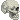

ray
compared to the many other zelda games, skyward sword takes on a more impressionist style with its graphics and art direction in general. i personally really enjoy the many painterly textures that this game has to offer and love to stare at all its tiny details. the style also strikes a nice balance between the darker, more realistic visuals of twilight princess and the more cartoonish, playful style of wind waker that allows for the game to be tonally flexible. the colors are also very pretty and nice and awesome sauce yay
i also really enjoy the character designs in this game. they similarly strike a nice balance between semi-realism and fun cartoony guys; the game is both quite beautiful but also has a lot of personality.
also one of the characters who works at a pumpkin themed restaurant has pumpkin shaped hair and i think that’s really cool
i made a google slides presentation on this once and i don’t feel like doing it again but the lore is awesome you should look it up (or play the game :D) just trust
skyward sword has probably one of my favorite soundtracks in the series. i got to play a medley of a bunch of different songs for my piano recital one year and it was a lot of fun to play. the music is very expressive and well-arranged; i would love to hear it in an orchestra setting one day. the skyloft theme is fun and makes me smile lol
(skyloft theme-extended)

 if you have heard of or played the original wii version of skyward sword before, you have probably heard many times about how much the motion controls suck balls. they are very finicky with how you swing the wii remote which can definitely become annoying for people since a lot of the gameplay mechanics (items, puzzles, combat, doing random shit, etc.) are motion-based in the sense that accuracy of direction matters. this has definitely caused a lot of people to rage at the game and is one of the reasons why i don’t try to fight people when they say they don’t like the game
if you have heard of or played the original wii version of skyward sword before, you have probably heard many times about how much the motion controls suck balls. they are very finicky with how you swing the wii remote which can definitely become annoying for people since a lot of the gameplay mechanics (items, puzzles, combat, doing random shit, etc.) are motion-based in the sense that accuracy of direction matters. this has definitely caused a lot of people to rage at the game and is one of the reasons why i don’t try to fight people when they say they don’t like the game
that being said, i recently beat skyward hd (nintendo switch remake), and while the hd remake of the game had a much smoother control scheme, one kinda(?) negative result of this change is that the game is easy as hell now. weirdly enough, i kinda missed the feeling having to take multiple tries to clear a puzzle or a boss fight. maybe i am attached to the rage that the original version created for nostalgia reasons or something idk
i also find the fact that it sucks a little charming ok. sue me
they also didn’t bother me too much personally so maybe to some extent i was just good at the game :D upon starting a new playthrough of the wii version though i realized that the motion controls end up being a lot more accurate if you swing the wii remote fully like a sword (like in bigger sweeping motions) rather than just flicking the wii remote in the direction you want the sword to go
i think the goal of the motion controls was likely to create a more immersive experience but it unfortunately fell flat on the fact that most people are probably going to just be playing this game sitting on their couch rather than an active sword swinging mode lol

the kikwi elder look him up he’s awesome
the faron region in general is very pretty
THE LUMPY PUMPKIN aka pumpkin themed restaurant aka pumpkin SHAPED restaurant aka custom ordered handmade pumpkin chandelier aka pumpkin soup aka yummy awesome aka pumpkin
 a lot of people find the silent realm scary/anxiety inducing but i really like it. it’s one of the most fun parts of the game for me
ghirahim’s theme. fun to play on the piano
faron woods
the lumpy pumpkin
silent realm (lanayru region)
observe. a pop-up box has appeared on your screen
your health is low. replenish it now
your shield durability is low. fix that
hey target this enemy and call me i have a cool fun fact about it
deku baba
this enemy is really scary
hi
PUT A BEACON. ON YOUR MAP. NOW
hey. you really want to dowse. you really want to dowse right now you can do it if you just press c it's right there on your nunchuk right now just do it
woah that shield you just got is in your gear you should really go in and like look at it again even though you just purchased it. it likes to be stared at idk
the batteries in your wii remote are low. change them